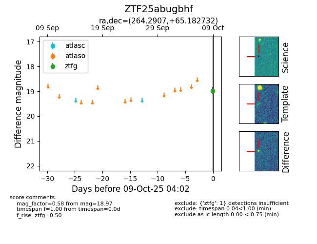

FINK: ZTF25abugbhf
Lasair: ZTF25abugbhf
ALeRCE: ZTF25abugbhf
ZTF25abugbhf (ztf,fink)
equatorial (ra, dec) = (264.2907,+65.18273)
galactic (l, b) = (94.8861,+32.19677)

last ztfg=18.97
1 ztfg detections